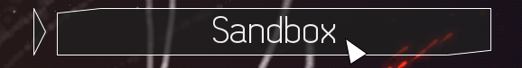
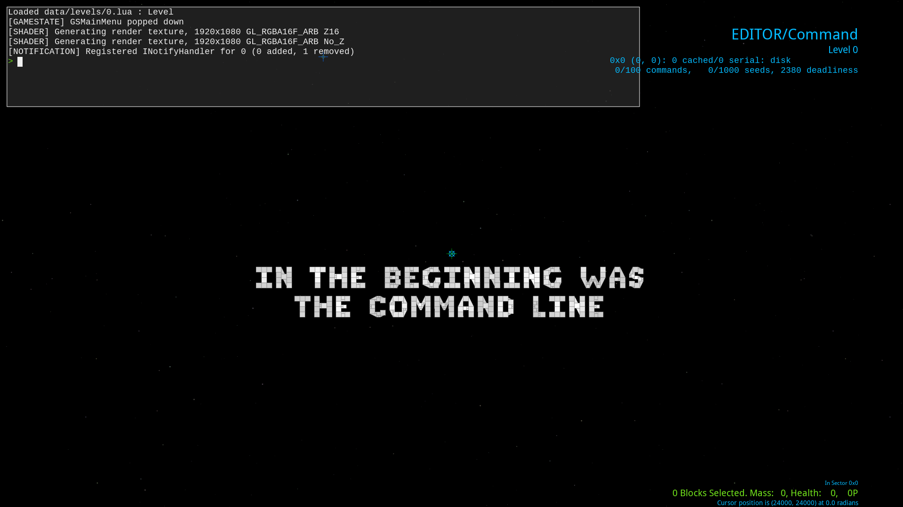
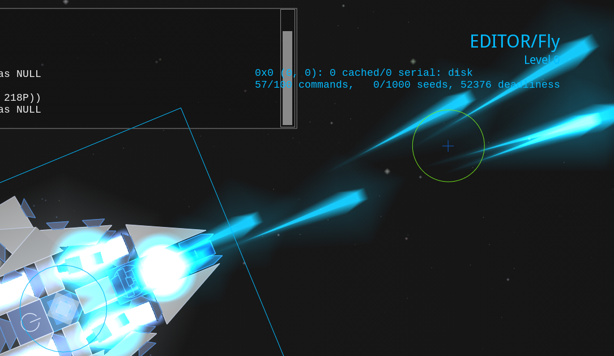
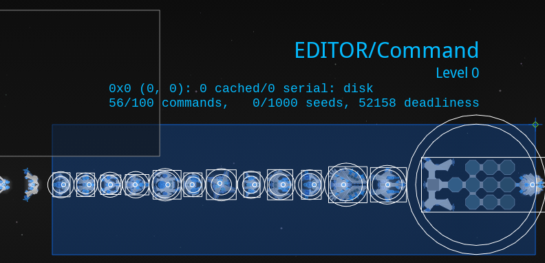
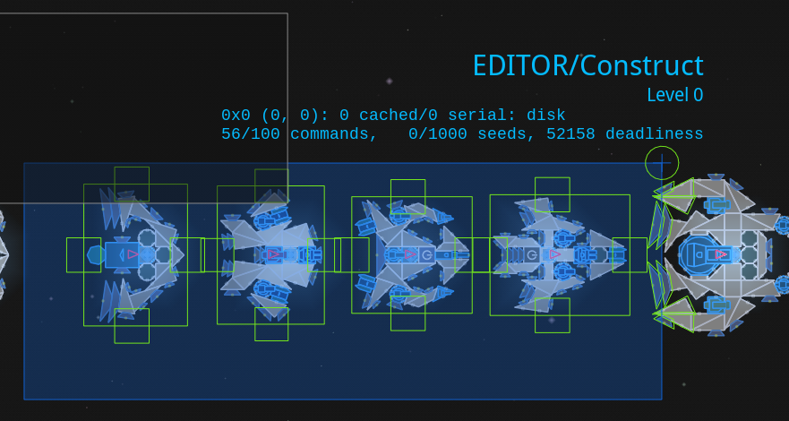
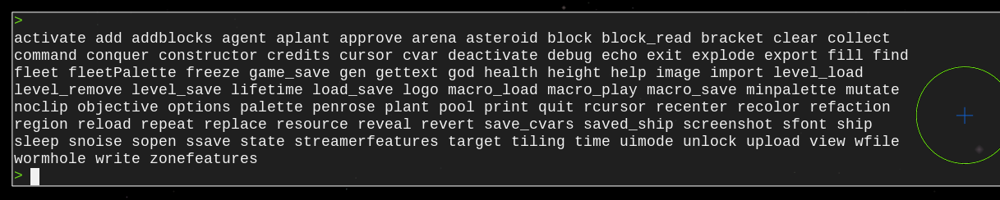
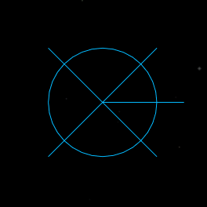

Sandbox Basics

The sandbox is where a faction's blocks can be tested out and where ships can be built without anything annoying getting in the way.

Sandbox Modes
There are 3 modes for interacting with the sandbox:
-
Fly: start controlling the selected ship.
 -
Command: select ships and see how your ships will look in game.
 -
Construct: interact with everything with the controls of the campaign's editor and look at the selected ship's construction info in the bottom right.

Switch between the modes by pressing the corresponding number keys without having your mouse cursor over the console. (1 for fly, 2 for command, 3 for construct.)
Interacting with the Console
Hovering your mouse over the console in the top left lets you type console commands.
Pressing Tab will either autocomplete what you are typing or list out what options you could type.
For example, pressing tab on an empty console will give you every command in a list:

Many commands do an action at the deploy location, the blue circle with an X. Change its location by double clicking.
Spawning in Palettes
Each faction has a palette that can be spawned in using the mi command followed by either its group in the blocks.lua or its name in the factions.lua.
Work with the palette using normal editor controls by switching to command mode by pressing 3.
Looking at Ships
The main use of the command mode other than selecting ships is to look at ships without the construct mode's visual clutter.
This is useful if you care about how lines are drawn or if you just want to see how your ships will look in game.
Flying Ships
Duplicate your ship in construct mode (3) and then fly it around away from your construction area with fly mode (1).
(Always duplicate your ships before flying them so that they can always be saved in their latest state and so that they do not reassemble to a previous state if activated.)
Saving Modded Ships
Once you have spawned in a palette and made a ship with a command, save it to your mod's ships/ folder with the ss <Ship Name Here> command. Note that you must use underscores instead of spaces.
Note that if neither your ship has a corresponding faction defined in the faction.lua nor there is a preexisting ships/ folder, your ship will instead be saved to C:/Users/<your username here>/Saved Games/Reassembly/Data/ships/.
Spawning Fleet Palettes
Spawn in a faction's fleets by using the fleetp command followed by either its faction ID or its name in the factions.lua.
(fleetp 0 spawns in plants, fleetp -10 spawns in every faction except for the Contestants, and specifying any other negative faction ID spawns in every faction plus the Contestants.)
Saving the Sandbox
Use Ctrl + S to save the state of the sandbox.
If you want a clean state for your sandbox a big block of text saying 'IN THE BEGINNING WAS THE COMMAND LINE', use the cl command to clear everything and the do Ctrl + S.
Opening and Closing the Console
Use the ` or ~ buttons without the mouse cursor over the console to open and close the console view. Works everywhere and not just the sandbox (save for most menus).
Pressing Esc also closes the console view.
Time Settings
Use P without the mouse cursor over the console to freeze and unfreeze time.
Use O in the same way to progress Reassembly's simulation by 1 update (can be held down).
Use { to speed down update rate (not updates per second) by 50% and } to slow it down by 50%.
Use the deb fps command to open the FPS debugger in the bottem left to check update rate and UPS.`